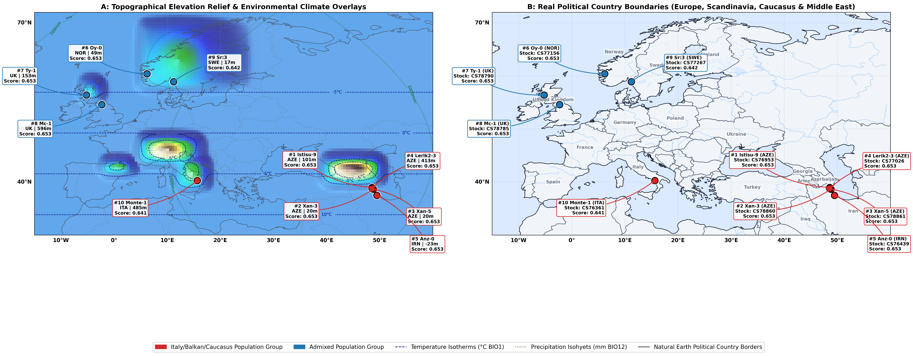

Interactive spatial mapping, polygenic score breakdown, and phenotypic profile explorer for top spaceflight-responsive Arabidopsis thaliana accessions.
High-resolution topographical map of Europe, the Caucasus, and the Middle East projecting land surface elevation relief, annual mean temperature isotherms (BIO1, navy dashed lines), and annual precipitation isohyets (BIO12, green dotted lines). This overlay reveals how microclimate extremes—such as mountain cold tolerance in Lerik2-3/Mc-1, subarctic photoperiod sensitivity in Oy-0, coastal salinity in Anz-0, and Caspian thermal stress in Istisu-9/Xan-3—have driven local adaptation and spaceflight response sensitivity.

Explore the geographic locations of the Top 10 accessions across Europe and Western Eurasia. Click on any marker to inspect its detailed phenotypic spotlight profile below.
Select an accession from the dropdown or click a point on the map to inspect its full physiological profile and stock ordering details: